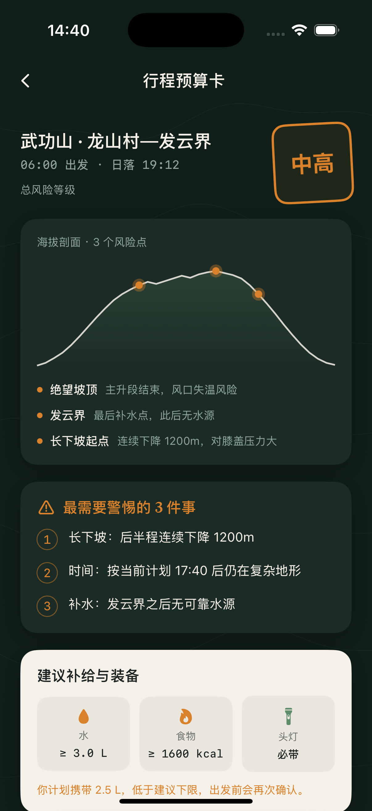
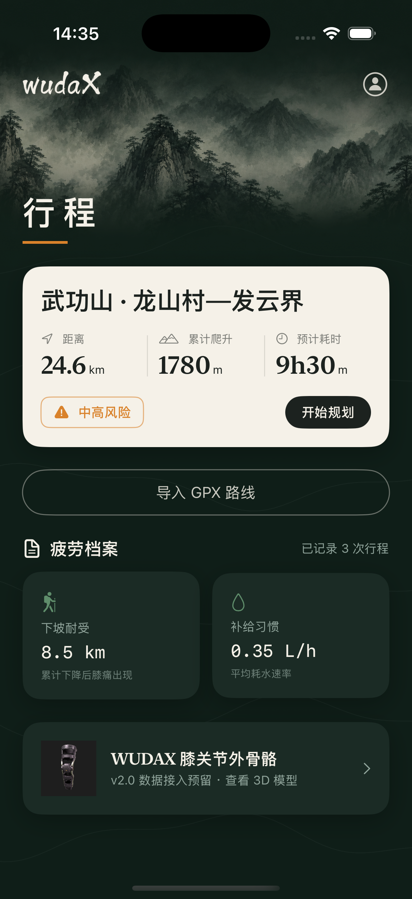
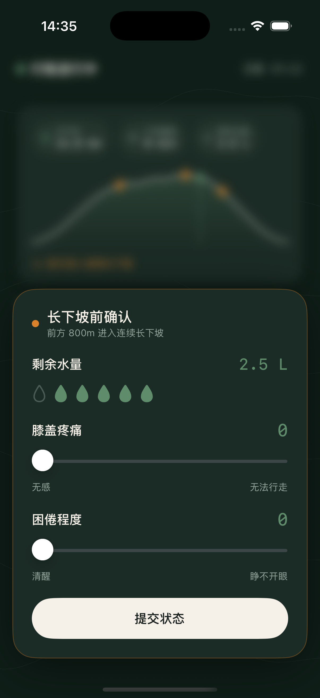
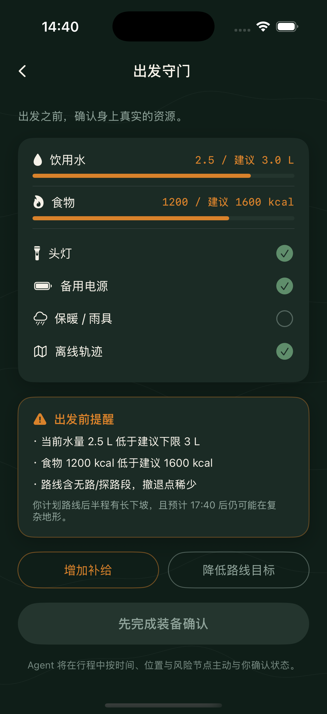
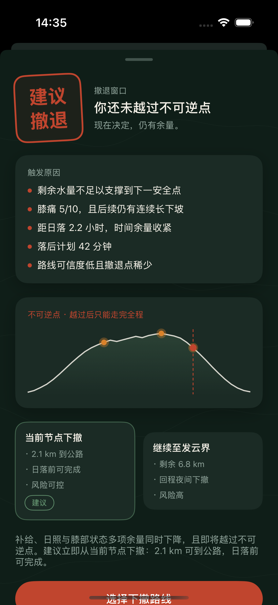

01行前认识余量
比对路线负荷与个人经验上限，给出补给、装备和挑战评级。
Offline hiking fatigue agent
WUDAX 把 GPX 路线、补给、疲劳、日照窗口、弱 GPS 与端侧 Agent 合成一条本地决策链。 平时安静；当风险叠加时，给出明确、可解释、可执行的继续或下撤建议。


Launch film
当前版本使用现有设计图和应用截图串成可替换素材的 teaser。完整制作脚本、运镜和旁白在
landing/video/ 中维护。
Interactive hardware preview
拖动旋转模型，观察膝部铰链、腿部固定带与外侧执行器。未来版本会把外骨骼力学信号接入疲劳判断， 减少行中手动问询。
拖动旋转 · 滚轮缩放 · 支持 iOS Quick Look
Trip loop

01比对路线负荷与个人经验上限，给出补给、装备和挑战评级。

02确认 GPX、补给、权限与离线资源，不把未完成准备伪装成就绪。

03在补给、日照、长下坡和身体信号叠加时，明确建议降级或下撤。
Safety contract
WUDAX 的安全结论来自确定性 Swift 规则。端侧小模型只负责把路线、补给和状态结果解释成人能快速理解的话； 它不能降低风险等级，也不能创造未受控行动。